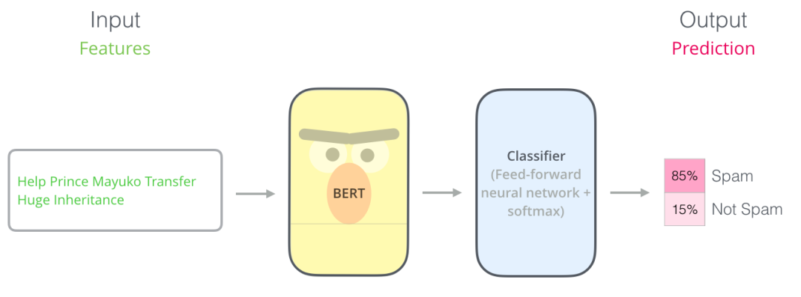
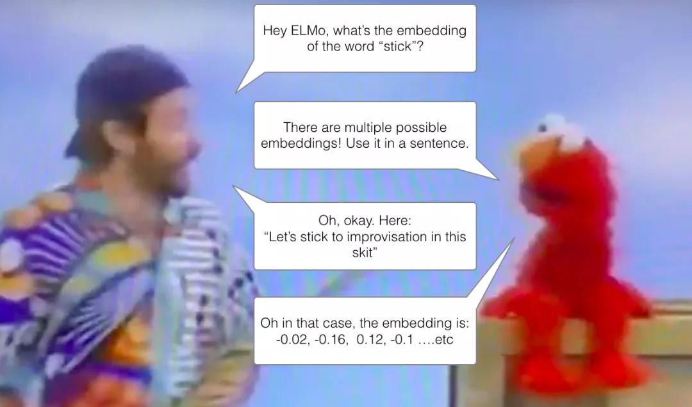
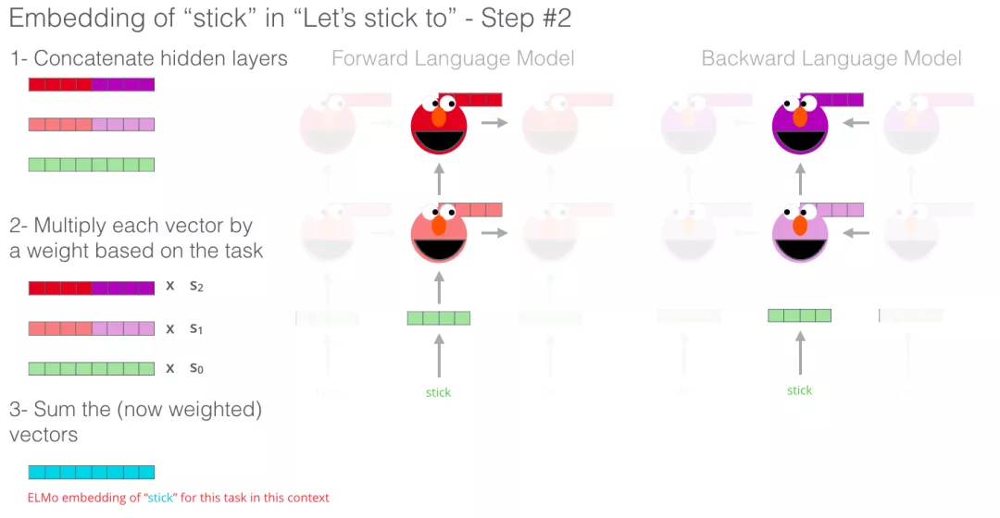

author：TongMing
Datawhale 开源学习地址：https://github.com/datawhalechina/learn-nlp-with-transformers
个人总结
预训练：根据MASK的方式进行自监督的学习，
微调：结合监督信息进行半监督的学习
BERT是transformer的encoder部分
ELMo可以表示不同语境下的“多义词”
图解BERT（精华）
前言
BERT 开发的两个步骤：第 1 步，你可以下载预训练好的模型（这个模型是在无标注的数据上训练的）。然后在第 2 步只需要关心模型微调即可。
句子分类
使用 BERT 最直接的方法就是对一个句子进行分类。这个模型如下所示：
图：BERT句子分类
为了训练这样一个模型，你主要需要训练分类器（上图中的 Classifier），在训练过程中 几乎不用改动BERT模型。这个训练过程称为微调，它起源于Semi-supervised Sequence Learning 和 ULMFiT。
其他例子还包括：预测语义分析和断言
模型架构
论文里介绍了两种不同模型大小的 BERT：
- BERT BASE - 与 OpenAI 的 Transformer 大小相当，以便比较性能
- BERT LARGE - 一个非常巨大的模型，它取得了最先进的结果
2 种不同大小规模的 BERT 模型都有大量的 Encoder 层（论文里把这些层称为 Transformer Blocks）- BASE 版本由 12 层 Encoder，Large 版本有 20 层 Encoder。同时，这些 BERT 模型也有更大的前馈神经网络（分别有 768 个和 1024 个隐藏层单元）和更多的 attention heads（分别有 12 个和 16 个），超过了原始 Transformer 论文中的默认配置参数（原论文中有 6 个 Encoder 层， 512 个隐藏层单元和 8 个 attention heads）。
模型输入
 图：模型输入
图：模型输入
第一个输入的 token 是特殊的 [CLS]，它 的含义是分类（class的缩写）。
就像 Transformer 中普通的 Encoder 一样，BERT 将一串单词作为输入，这些单词在 Encoder 的栈中不断向上流动。每一层都会经过 Self Attention 层，并通过一个前馈神经网络，然后将结果传给下一个 Encoder。
 图：BERT encoder
图：BERT encoder
在模型架构方面，到目前为止，和 Transformer 是相同的（除了模型大小，因为这是我们可以改变的参数）。我们会在下面看到，BERT 和 Transformer 在模型的输出上有一些不同。
模型输出
每个位置输出一个大小为 hidden_size（在 BERT Base 中是 768）的向量。对于上面提到的句子分类的例子，我们只关注第一个位置的输出（输入是 [CLS] 的那个位置）。
 图：BERT output
图：BERT output
这个输出的向量现在可以作为后面分类器的输入。论文里用单层神经网络作为分类器，取得了很好的效果。
 图：BERT 接分类器
图：BERT 接分类器
如果你有更多标签（例如你是一个电子邮件服务，需要将邮件标记为 “垃圾邮件”、“非垃圾邮件”、“社交”、“推广”），你只需要调整分类器的神经网络，增加输出的神经元个数，然后经过 softmax 即可。
与卷积神经网络进行对比
对于那些有计算机视觉背景的人来说，这个向量传递过程，会让人联想到 VGGNet 等网络的卷积部分，和网络最后的全连接分类部分之间的过程。
 图：CNN
图：CNN
词嵌入（Embedding）的新时代
上面提到的这些新发展带来了文本编码方式的新转变。到目前为止，词嵌入一直是 NLP 模型处理语言的主要表示方法。像 Word2Vec 和 Glove 这样的方法已经被广泛应用于此类任务。在我们讨论新的方法之前，让我们回顾一下它们是如何应用的。
回顾词嵌入
单词不能直接输入机器学习模型，而需要某种数值表示形式，以便模型能够在计算中使用。通过 Word2Vec，我们可以使用一个向量（一组数字）来恰当地表示单词，并捕捉单词的语义以及单词和单词之间的关系（例如，判断单词是否相似或者相反，或者像 “Stockholm” 和 “Sweden” 这样的一对词，与 “Cairo” 和 “Egypt”这一对词，是否有同样的关系）以及句法、语法关系（例如，”had” 和 “has” 之间的关系与 “was” 和 “is” 之间的关系相同）。
人们很快意识到，相比于在小规模数据集上和模型一起训练词嵌入，更好的一种做法是，在大规模文本数据上预训练好词嵌入，然后拿来使用。因此，我们可以下载由 Word2Vec 和 GloVe 预训练好的单词列表，及其词嵌入。下面是单词 “stick” 的 Glove 词嵌入向量的例子（词嵌入向量长度是 200）。
 图： wrod vector
图： wrod vector
单词 “stick” 的 Glove 词嵌入 - 一个由200个浮点数组成的向量（四舍五入到小数点后两位）。
语境问题
如果我们使用 Glove 的词嵌入表示方法，那么不管上下文是什么，单词 “stick” 都只表示为同一个向量。一些研究人员指出，像 “stick” 这样的词有多种含义。为什么不能根据它使用的上下文来学习对应的词嵌入呢？这样既能捕捉单词的语义信息，又能捕捉上下文的语义信息。于是，语境化的词嵌入模型应运而生。
图：ELMO
语境化的词嵌入，可以根据单词在句子语境中的含义，赋予不同的词嵌入。你可以查看这个视频 RIP Robin Williams（https://zhuanlan.zhihu.com/RIP Robin Williams）
ELMo 没有对每个单词使用固定的词嵌入，而是在为每个词分配词嵌入之前，查看整个句子，融合上下文信息。它使用在特定任务上经过训练的双向 LSTM 来创建这些词嵌入。
ELMo 在语境化的预训练这条道路上迈出了重要的一步。ELMo LSTM 会在一个大规模的数据集上进行训练，然后我们可以将它作为其他语言处理模型的一个部分，来处理自然语言任务。
那么 ELMo 的秘密是什么呢？
ELMo 通过训练，预测单词序列中的下一个词，从而获得了语言理解能力，这项任务被称为语言建模。要实现 ELMo 很方便，因为我们有大量文本数据，模型可以从这些数据中学习，而不需要额外的标签。
 图： ELMO 训练
图： ELMO 训练
ELMo 预训练过程的其中一个步骤：以 “Let’s stick to” 作为输入，预测下一个最有可能的单词。这是一个语言建模任务。当我们在大规模数据集上训练时，模型开始学习语言的模式。例如，在 “hang” 这样的词之后，模型将会赋予 “out” 更高的概率（因为 “hang out” 是一个词组），而不是 “camera”。
在上图中，我们可以看到 ELMo 头部上方展示了 LSTM 的每一步的隐藏层状态向量。在这个预训练过程完成后，这些隐藏层状态在词嵌入过程中派上用场。
 图：ELMO 训练
图：ELMO 训练
ELMo 通过将隐藏层状态（以及初始化的词嵌入）以某种方式（向量拼接之后加权求和）结合在一起，实现了带有语境化的词嵌入。
图：ELMO 训练